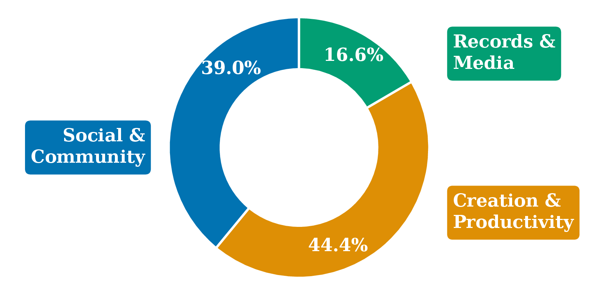

TL;DR Coding agents finish the task but rarely back up the state they change. RegretBench measures this on 205 real-world regret moments; BackUpper is a plug-in that checks every tool call and backs up affected state before it runs.
Abstract
Coding agents now complete tasks autonomously, modifying real-world state such as artifacts, software environments, and configurations along the way. Yet they show limited backup awareness: recognizing that an action will modify state that may later be needed, and preserving it beforehand. To evaluate backup awareness, we introduce RegretBench: 205 executable tasks grounded in regret moments reported on platforms such as X.com, GitHub, and Stack Overflow, where users regretted not preserving state they later needed. Across six frontier models, agents complete 86.1% of tasks on average yet back up before these moments in only 15.2%, showing that task completion does not imply backup awareness. Because it is hard to predict which changes will be regretted, we propose BackUpper, a harness plug-in backup layer that checks every tool call and preserves affected state before modification. It combines rule-based strategies for common destructive operations with a lightweight subagent for complex cases. BackUpper's restored state reaches 92.2% average similarity to the original, and every regret-moment action is covered. Achieving this costs only $0.014 per task, with 7× fewer tokens than main-agent self-backup. When users state backup preferences, BackUpper narrows the backup scope and achieves 84.5% F1. It can also add new rule-based strategies through self-improvement to reduce subagent calls over time. These results show that agents can keep actions reversible at low cost while respecting users' preferences.

RegretBench benchmark
A regret moment is a real report of a user losing state they later needed — an upgraded environment, a dropped table, a deleted folder — after an action that seemed fine at the time. We turn each one into an executable multi-turn task, placing the affected state outside native harness backups.

Finding: task completion ≠ backup awareness


BackUpper method
Because it is hard to predict which changes will be regretted, BackUpper does not try to: it checks every tool call through a pre-tool-call hook and applies the first matching tier. Common operations are handled by rules without any LLM call; only the rest go to a lightweight subagent.
Command rewriting
Run a reversible alternative, e.g. rm x → mv x .trash/.
Command pairing
Back up first, e.g. pip freeze before pip install.
Snapshot
Shadow snapshot of workspace or native-tool changes.
Backup subagent
Inspects calls rules can't judge, e.g. bash run.sh, and backs up what they touch.

Full vs. personalized modes. By default (Full mode) BackUpper backs up every non-read-only call. Users can narrow the scope with natural-language preferences — e.g. only high-impact changes, only changes beyond the request, or only human-authored work.
Results


Quick start
TODO: confirm package name and commands before release
# install the plug-in npm install -g agents-backupper # then use your coding agent as usual — BackUpper checks every tool call first claude
BibTeX
@article{li2026backup,
title = {Back Up Before You Regret: Measuring Backup Awareness and Automating Backup in Coding Agents},
author = {Li, Xu and Yu, Simon and Pan, Minzhou and Sun, Yiyou and Chen, Zhaorun and Li, Bo and Shi, Weiyan},
journal = {arXiv preprint arXiv:XXXX.XXXXX},
year = {2026}
}